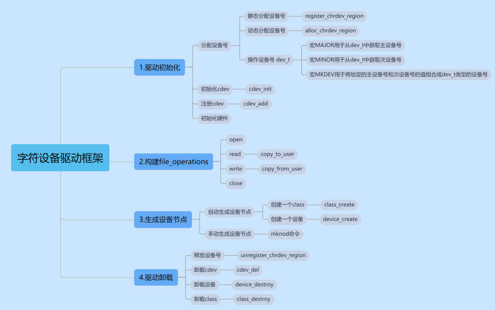
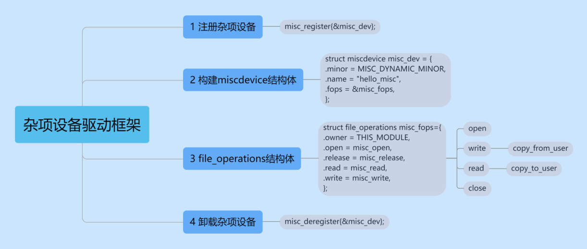
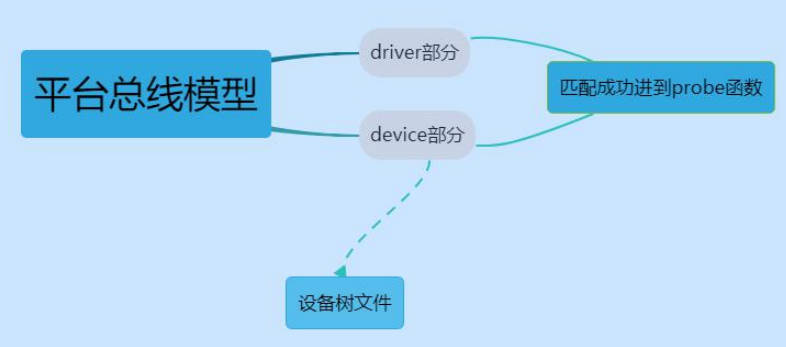
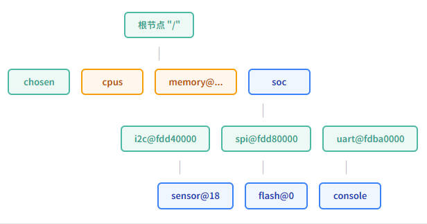
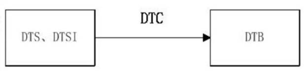

Linux设备树
一、设备树的由来
任何的设备驱动的编写，Linux 已经为我们打好了框架，我们只要像做完形填空一样填写进去就可以了。字符设备驱动框架如下图所示：

杂项设备驱动框架：

通过这些框架，我们可以很容易编写驱动代码，但是，当我们用这个框架非常熟练的时候，我们就会发现虽然这个方法很简单，但是非常不容易扩展，当我们有很多很多相似设备的时候，如果我们都是按照这个框架来完成，那就要写很多遍这个流程，但是多个相似设备之间真正有差异的地方只有框架的初始化硬件的部分，其他步骤的代码基本都是一样的。这样就会造成大量的重复代码。
如果把通用的代码和有差异的代码分离出来，就可以增强我们驱动代码的可移植性。所以，设备驱动分离的思想也就应运而生了，在 Linux 中，我们是在写代码的时候进行分离，分离是把一些不相似的东西放到了 device.c，把相似的东西放在了 driver.c，如果我们有很多相似的设备或者平台，我们只要修改 device.c 就可以了，这样我们重复性的工作就大大的减少了。这个就是平台总线的由来。
假如 soc 不变，我们每换一个平台，都要修改 C 文件，并且还要重新编译。而且会在 arch/arm/plat-xxx 和arch/arm/mach-xxx 下面留下大量的关于板级细节的代码。从 Linux 的发展来看，这些代码相对于Linux 内核来说就是“垃圾代码”。
为了改变这个现状，设备树也就被引进到 Linux 上了，用来剔除相对内核来说的“垃圾代码”，即用设备树文件来描述这些设备信息，也就是代替 device.c 文件，platform 匹配上基本不变，并且相比于之前的方法，使用设备树不仅可以去掉大量“垃圾代码”，并且采用文本格式，方便阅读和修改，如果需要修改部分资源，我们也不用在重新编译内核了，只需要把设备树源文件编译成二进制文件，在通过 bootloader 传递给内核就可以了。内核在对其进行解析和展开得到一个关于硬件的拓扑图。我们通过内核提供的接口获取设备树的节点和属性就可以了。即内核对于同一soc 的不同主板，只需更换设备树文件dtb 即可实现不同主板的无差异支持，而无需更换内核文件。

二、什么是设备树
Device Tree 是一种描述硬件的数据结构，由一系列被命名的节点（node）和属性（property）组成，而节点本身可包含子节点。所谓属性，其实就是成对出现的 name 和 value。
在 Device Tree 中，可描述的信息包括：CPU 的数量和类别，内存基地址和大小，总线和桥，外设连接，中断控制器和中断使用情况，GPIO 控制器和 GPIO 使用情况，Clock 控制器和Clock 使用情况。设备树基本上就是画一棵电路板上由CPU、总线、设备组成的树，Bootloader 会将这棵树传递给内核，然后内核可以识别这棵树，并根据它展开出Linux 内核中的 platform_device、i2c_client、spi_device 等设备，而这些设备用到的内存、IRQ 等资源，也被传递给了内核，内核会将这些资源绑定给展开的相应的设备。

三、DTS、DTC 和 DTB
文件 .dts 是一种 ASCII 文件格式设备树描述，在 Linux 中，一个 .dts 文件对应一个 ARM 设备，一般放置在arch/arm/boot/dts 目录下。
dtb 文件是 dts 文件被编译后生成的二进制文件，由 Linux 内核解析，有了设备树文件就可以在不改动 Linux 内核的情况下，对不同的平台实现无差异的支持，只需更换相应的 dts 文件，即可满足。
dtc 是将 dts 编译为 dtb 的工具。Linux 源码目录下 scripts/dtc 目录包含 dtc 工具的源码。除此之外，也可以自己安装 dtc 工具，linux 下执行：sudo aptget install device-tree-compiler 安装 dtc 工具。
dtc 工具的使用方法：
1 | |
反过来即可生成 dts 文件：
1 | |
下图是几者之间的关系：

四、DTS 设备树语法结构
一般情况下，我们不会从头编写一个完整的 dts 文件，SOC 厂商一般会直接提供一个有着基本框架的 dts 文件，当需要添加自己的板子设备树文件时，基于厂商提供的 dts 文件修改即可。
4.1 设备节点信息
设备树从根节点开始，每个设备都是一个节点。根节点就相当于树根。节点和节点之间可以互相嵌套，形成父子关系。设备的属性用 key-value 对来描述，每个属性用分号结束。下面先来看一个设备树结构模板：
1 | |
- 一个单独的根节点：“/”
- 两个子节点：“node1”和“node2”
- 两个 node1 的子节点：“child-node1”和“child-node2”
- 一些分散在树里的属性，属性是最简单的键-值对，它的值可以为空或者包含一个任意的字节流。
下面是设备树源文件中仍有几个基本的数据表示形式：
- 文本字符串（无结束符），可以用双引号表示：a-string-property = “A string”;
- “cells”是32 位无符号整数，用尖括号限定：cell-property = <0xbeef 123 0xabcd1234>；
- 二进制数据用方括号限定：binary-property = [0x01 0x23 0x45 0x67];
- 不同表示形式的数据可以用逗号连在一起：mixed-property = “a string”, [0x01 0x23 0x45 0x67], <0x12345678>;`
- 逗号也可以用于创建字符串列表：
string-list = "red fish", "blue fish"
4.2 设备节点及 lable 命名
在前面的代码中，我们注意到节点和子节点之间的命名有所不同，它们都遵循了下面的命名格式：
1 | |
<名称> 节点的名称也不是任意起的，一般要体现设备的类型而不是特点的型号，比如网口，应该命名为 ethernet，而不是随意起一个，比如 111。
<设备地址>就是用来访问该设备的基地址。但并不是说在操作过程中来描述一个地址，他主要用来区分用。
- 同一级的节点只要地址不一样，名字是可以不唯一的。
- 设备地址是一个可选选项，可以不写。但为了容易区分和理解，一般是都写的。
当我们找一个节点的时候，我们必须书写完整的节点路径，如果我们的节点名很长，那么我们在引用的时候就十分不方便，所以，设备树允许我们用下面的形式为节点标注引用(起别名)。
1 | |
其中，uart8 就是这个节点名称的别名，serial@02288000 就是节点名称。一般我往一个节点里面添加内容的时候，不会直接把添加的内容写到节点里面，而是通过节点的引用来添加。
1 | |
&uart8 表示引用节点别名为 uart8 的节点，并往这个节点里面添加以下内容：
1 | |
注意：编译设备树的时候，相同的节点的不同属性信息都会被合并，相同节点的相同的属性会被重写，使用
引用可以避免四处找节点。如 dts 和 dtsi 里面都有根节点，但最终会合并成一个根节点。
下面看一个实例：
1 | |
设备树语法包含三个核心元素：节点（node）、属性（property）、标签（label）。下面用表格列出开发中最常用的属性，这些在 RK3588 的设备树文件中会频繁遇到。
节点名称由名称和地址两部分组成，中间用 @ 分隔。例如 i2c@fdd40000 表示 I2C 控制器，基地址是 0xfdd40000。地址部分帮助区分同类型设备。
i2c0: 是标签，板级文件可通过 &i2c0 引用这个节点并修改属性——比如把 status 改为 "okay"。
| 属性名 | 作用 | 示例值 | 说明 |
|---|---|---|---|
compatible |
驱动匹配关键字 | "rockchip,rk3588-i2c" |
驱动通过这个字符串找到对应设备 第一个字符串表示厂商，后面的字符串表示确切的设备名称 |
reg |
寄存器地址或设备地址 | <0xfdd40000 0x1000> |
第一个值是基地址，第二个是长度 |
interrupts |
中断号与触发方式 | <GIC_SPI 89 IRQ_TYPE_LEVEL_HIGH> |
告诉内核使用哪个中断线 |
status |
设备启用状态 | "okay" 或 "disabled" |
"okay"启用，"disabled"禁用，“fail”表示因为出错不可用，“fail-sss”表示某种原因出错不可用，sss 表示具体出错的原因 |
clocks |
时钟源引用 | <&cru CLK_I2C0> |
关联时钟控制器，需要查阅时钟树 |
pinctrl-0 |
引脚功能配置 | <&i2c0_xfer> |
指定I/O引脚的复用功能 |
#address-cells |
指定设备树中地址单元的位数 | <1> |
告诉解析设备树的软件在解释设备地址时应该使用多少位来表示一个地址单元(默认值为 2，即用两个单元表示一个设备地址，这意味着设备的地址将由两个整数组成，用两个 32 位（4字节）整数表示地址) |
#size-cells |
指定设备树中大小单元的位数 | <1> |
大小单元是设备树中用于表示设备大小的单个单位，它通常是一个整数，可以是十进制或十六进制。其值告诉解析设备树的软件在解释设备大小时应该使用多少位来表示一个大小单元。默认情况下值为 1，表示使用一个单元来表示一个设备的大小。这意味着设备的大小将由一个整数(使用指定位数的位)表示 |
设备树绑定是指节点中的属性与驱动代码之间的对应关系。驱动通过 compatible 属性找到要控制的设备，两者就像"钥匙和锁"——compatible 字符串是钥匙齿形，驱动中的 of_match_table 是锁芯，只有匹配的钥匙才能打开对应的锁。
在RK3588上开发外设驱动时，你需要在设备树中填写正确的 compatible 字符串，并在驱动中声明同样的字符串。这个字符串的命名规范是 "厂商,设备型号"，全部小写。
1 | |
4.3 RK3588 设备树文件组织
RK3588 的设备树文件采用两层结构：rk3588.dtsi 是 SoC 级描述文件，包含芯片内部所有外设的默认配置；rk3588-evb.dts 是板级描述文件，引用 rk3588.dtsi 中的节点并补充板级特有的硬件信息（如 GPIO 按键、LED、外部传感器等）。
这种分离设计的好处是：SoC 厂商维护 .dtsi，板卡厂商维护 .dts，互不干扰。你在项目中只需要修改板级 .dts 文件，不要改动 .dtsi，否则升级内核时容易产生冲突。
五、CPU 描述 - 不需要修改
设备树的 cpus 节点是用于描述系统中的处理器的一个重要节点。它是处理器拓扑结构的顶层节点，包含了所有处理器相关的信息。下面将详细介绍设备树的 cpus 节点的各个方面。
5.1 节点结构
cpus 节点是一个容器节点，其下包含了系统中每个处理器的子节点。每个子节点的名称通常为 cpu@X，其中 X 是处理器的索引号，如 cpu@0。每个子节点都包含了与处理器相关的属性，例如时钟频率、缓存大小等。
5.2 处理器属性
cpu@X 子节点中的属性可以包括以下信息:
device_type：指示设备类型为处理器 ("cpu”)。reg：指定处理器的地址范围，通常是物理地址或寄存器地址。compatible：指定处理器的兼容性信息，用于匹配相应的设备驱动程序。clock-frequency：指定处理器的时钟频率。cache-size：指定处理器的缓存大小。
这些节点的嵌套关系可以在 cpus 节点下形成一个层次结构，反映了处理器的拓扑结构。一个单核 CPU 设备树和一个四核 CPU 设备树示例如下所示：
单核 CPU 示例：
1 | |
多核 CPU 示例：
1 | |
5.3 cpu-map、socket、cluster 节点
- cpu-map 节点是设备树中用于描述大小核架构处理器的映射关系的节点之一。它的父节点必须是 cpus 节点，而子节点可以是一个或多个 custer 和 socket 节点。通过 cpu-map 节点，可以定义不同核心和集群之间的连接和组织结构。
- socket 节点用于描述处理器插槽(socket)之间的映射关系。每个 socket 子节点表示一个处理器插槽，可以使用 cpu-map-mask 属性来指定该插槽使用的核心。通过为每个 socket 子节点指定适当的 cpu-map-mask,可以定义不同插槽中使用的核心。这样，操作系统和软件可以了解到不同插槽之间的核心分配情况。
- cluster 节点用于描述核心(cluster) 之间的映射关系。每个 cluster 子节点表示一个核心集群，可以使用 cpu-map-mask 属性来指定该集群使用的核心。通过为每个 custer 子节点指定适当的 cpu-map-mask，可以定义每个集群中使用的核心。这样，操作系统和软件可以了解到不同集群之间的核心分配情况。
通过在 cpu-map 节点中定义 socket 和 cluster 子节点，并为它们指定适当的 cpu-map-mask，可以提供处理器的拓扑结构信息。这对于操作系统和软件来说非常有用，因为它们可以根据这些信息进行任务调度和资源分配的优化，以充分利用大小核架构处理器的性能和能效特性。
5.4 core、thread 节点
“core" 和 "thread” 节点通常用于描述处理器核心和线程的配置。下面是对这两个节点的详细介绍：
- core 节点用于描述处理器的核心。一个处理器通常由多个核心组成，每个核心可以独立执行指令和任务。
- Thread 节点用于描述处理器的线程。线程是在处理器核心上执行的基本执行单元，每个核心可以支持多个线程。
通过使用 core 和 thread 节点，设备树可以准确描述处理器的核心和线程的配置。
六、时钟描述 - 被使用
6.1 clock-cells
该属性用于指定时钟编号的位数。它是一个整数值，表示时钟编号的位数。通常情况下，当 clock-cells 为 0 时表示一个时钟，为 1 表示多个时钟。具体示例如下所示：
1 | |
6.2 clock-frequency
clock-frequency 属性是设备树中用于指定时钟频率的属性。它用于描述时钟节点所提供的时钟信号的频率，使用Hertz(H2) 作为单位。对于时钟生产者节点，clock-frequency 属性表示该节点生成的时钟信号的频率。它用于描述时钟控制器、晶振、PLL 等产生时钟信号的硬件或软件模块的输出频率，例如指定时钟频率为 24000000 的具体示例如下所示：
1 | |
6.3 assignned-clocks 和 assigned-clock-rates
assigned-cocks 属性用于标识时钟消费者节点所使用的时钟源。它是一个整数数组，每个元素对应一个时钟编号。时钟编号是指时钟生产者节点(如时钟控制器)所提供的时钟源的编号。通过在时钟消费者节点中使用 assigned-clocks 属性，可以指定该节点所需的时钟源。
assigned-clock-rates 属性用于指定每个时钟源的时钟频率。它是一个整数数组，每个元素对应一个时钟源的频率。时钟频率以 Hz(赫兹)为单位表示。assigned-clock-rates 属性的元素数量和顺序应与 assigned-clocks 属性中的时钟编号相对应。
关于 assigned-clocks 和 assigned-clock-rates 属性的一个具体示例下所示:
1 | |
6.4 clock-indices
clock-indices 属性用于指定时钟消费者节点所使用的时钟源的索引值。它是一个整数数组，每个元素对应一个时钟源的索引。
时钟索引是指时钟生产者节点(如时钟控制器)所提供的时钟源的编号。通过在时钟消费者节点中使用 clock-indices 属性，可以明确指定该节点所需的时钟源，并按照特定的顺序进行匹配。一个 clock-indices 示例如下所示:
1 | |
6.5 assigned-clock-parents
assigned-clock-parents 属性用于指定时钟消费者节点所使用的时钟源的父时钟源。
它是一个时钟源引用的数组，每个元素对应一个父时钟源的引用。在时钟的层次结构中，某些时钟源可能是其他时钟源的父时钟源，即它们提供时钟信号给其他时钟源作为输入。通过在时钟消费者节点中使用 assigned-clock-parents 属性，可以明确指定该节点所需的父时钟源，并按照特定的顺序进行匹配。一个实际的 assigned-clock-parents 属性例子如下所示：
1 | |
上述设备树表示了一个名为 clock 的时钟消费者节点，具有以下属性:
- assigned-clocks 属性指定了该节点使用的时钟源，引用了两个时钟源节点：ckcon0 和 pl 2。
- assigned-clock-parents 属性指定了这些时钟源的父时钟源，引用了 pll2 时钟源节点。
- assigned-clock-rates 属性指定了每个时钟源的时钟频率，分别是 115200 和 9600。
6.6 时钟消费者
时钟消费者是依赖时钟信号的硬件设备或模块。它们通过引用时钟生产者节点提供的时钟源来获取时钟信号。
6.6.1 clocks
该属性用于指定时钟消费者节点所需的时钟源。它是一个整数数组，每个元素是一个时钟编号，表示时钟消费者需要的一个时钟源。
6.6.2 clock-names
可选属性，用于指定时钟消费者节点所需时钟源的名称。它是一个字符串数组，与 clocks 数组一一对应，用于提供时钟源的描述性名称。
一个时钟消费者示例如下所示：
1 | |
- clocks 属性指定了该节点使用的时钟源，引用了 cru 节点中的 CLK_VOP 时钟源。
- clock-names 属性指定了时钟源的名称，这里是 “clk_vop”。